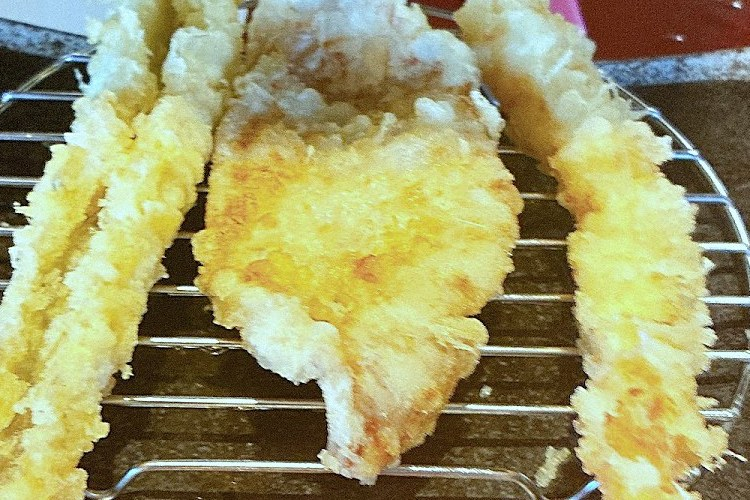
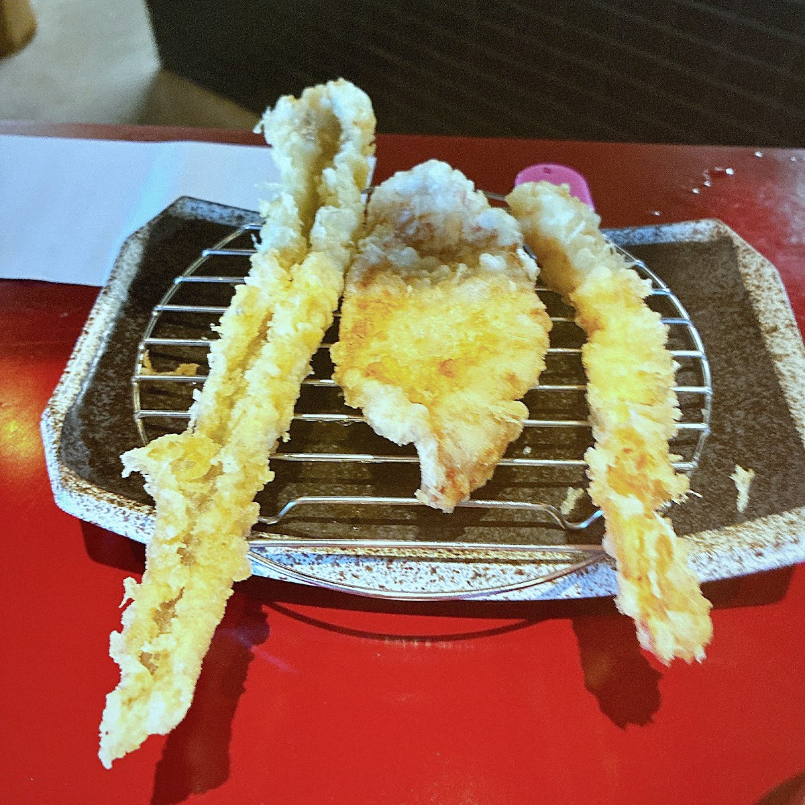
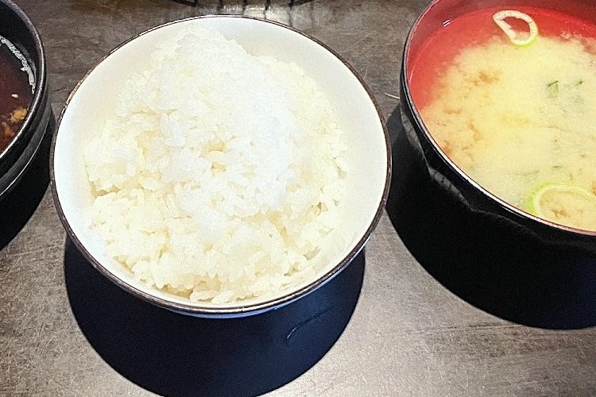
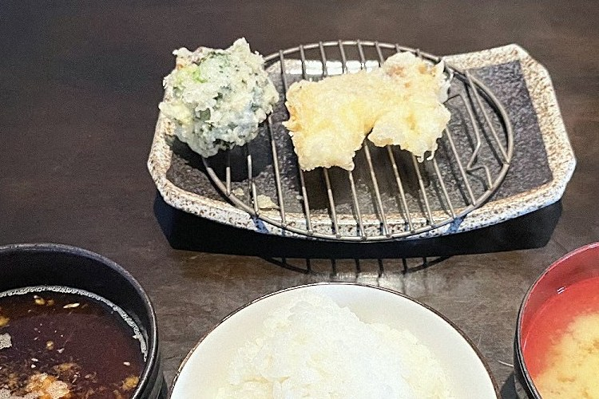
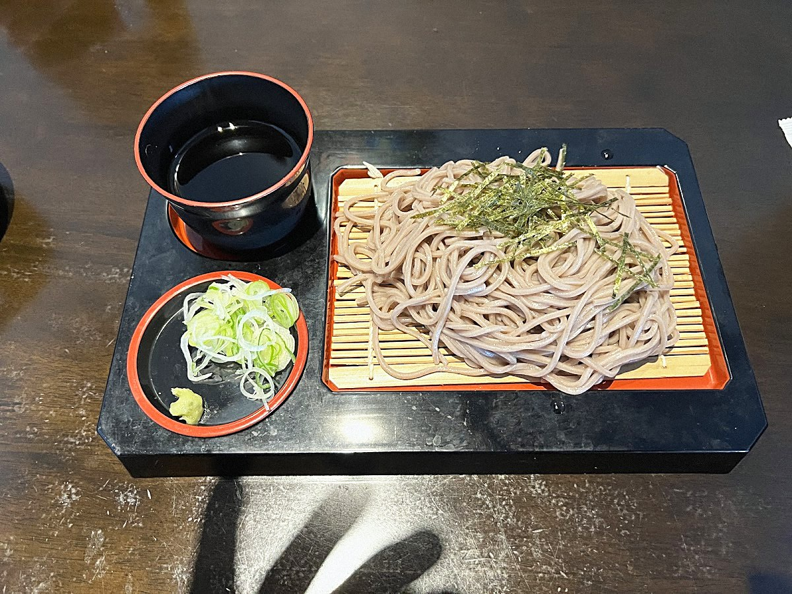
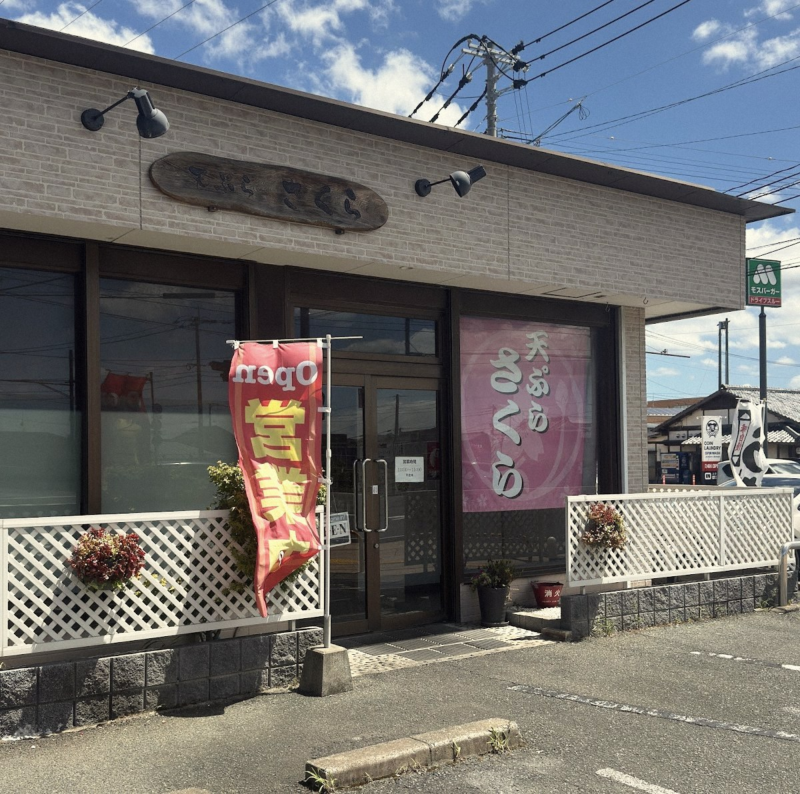

一の品IPPIN
揚げたてを、一品ずつ
揚げはじめるのは、注文を受けてから。揚がったものから順に、一品ずつお席の網へ運びます。まとめて出さず、一品ずつ届けるのは、衣のサクッとした軽さと熱々の美味しさを、いちばんいい状態で味わっていただくためです。「油も重たくなく、カラッと軽い」とは、お客様からいただく声。天つゆの味わいにも定評があります。一品ごとに熱々が続くのが、この店のコースの醍醐味です。
福岡県遠賀町 ・ 天ぷら
揚がったそばから、ひとつずつ、あなたの網へ。
まとめて出さないのは、いちばん美味しい瞬間を逃さないためです。
2009年創業、ランチのみの営業です。
ご予約もお電話で承ります

注文を受けてから揚げ、できたてを一品ずつ運ぶ。
遠賀町で十七年続く、天ぷらの昼ごはんです。

揚げはじめるのは、注文を受けてから。揚がったものから順に、一品ずつお席の網へ運びます。まとめて出さず、一品ずつ届けるのは、衣のサクッとした軽さと熱々の美味しさを、いちばんいい状態で味わっていただくためです。「油も重たくなく、カラッと軽い」とは、お客様からいただく声。天つゆの味わいにも定評があります。一品ごとに熱々が続くのが、この店のコースの醍醐味です。

コースと定食には、ごはんと味噌汁、高菜がつきます。ごはんと味噌汁はおかわり自由、高菜は取り放題です。味噌汁をおかわりされるお客様も少なくありません。もうひとつの名物が、イカの塩辛です。以前は食べ放題でしたが、現在はおひとり様一皿まで。それでも多くの方が楽しみにされる、ごはんの進む一品です。お腹いっぱい、天ぷらを楽しんでいただくための取り合わせです。

野菜の天ぷらのなかでも、ひときわ名指しで評判なのがブロッコリーです。「初めての経験。これがまた美味い」「僕は一押し」と、口コミでも繰り返し名前が挙がる、この店ならではの名物。海鮮コースにも顔を出します。そして、とろりと半熟に揚げた卵の天ぷらは追加注文の定番で、「ご飯のお供には最高」と評される一品です。
天ぷらの合間に、うどん・そばもございます。


※ 価格・内容は口コミ投稿時点の情報をもとにした仮の表記です。現在の価格とは異なる場合がありますので、最新情報はお店にご確認ください。
お車でお越しの方へ。店舗の前に駐車場がございます（無料）。お店は交差点の角にあり、店舗正面の木の看板とピンクの垂れ幕が目印です。場所が分からないときは、お電話いただければご案内します。

※ 案内図は位置関係を示すイメージです。台数・区画は目安としてご覧ください。